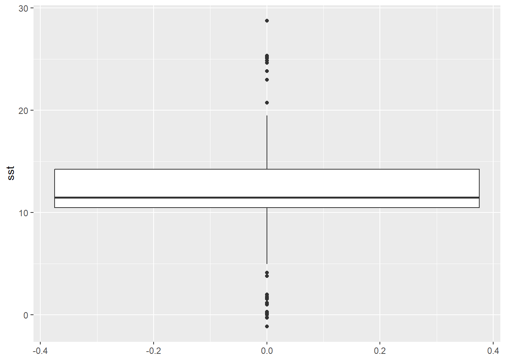

Show the code
library(sdmpredictors)
library(rgbif)
library(dplyr)
library(terra)How hard do you think it is to re-create a similar type of graphics?

Remember, packages were already installed, so we just need to load them. If something is not working, try (re)installing as a first solution.
library(sdmpredictors)
library(rgbif)
library(dplyr)
library(terra)The following code will do everything that we did on Day 2 and Day 3: contact the server, download the data, select only columns that we need and filter the rows, to keep only locations with GPS error less than 5 km, and download the mean global SST and transform in into terra type of object with rast() function:
physalus_data <- occ_search(scientificName = "Balaenoptera physalus", limit = 1500)$data %>%
select(species,
decimalLatitude,
decimalLongitude,
coordinateUncertaintyInMeters,
country,
continent) %>%
filter(coordinateUncertaintyInMeters < 5000)
povprecna_temp_morja <- rast(load_layers(layercodes = c("BO_sstmean")))We need terra type of object because we will use extract() function from the same package. There are two arguments we need to provide to it:
decimalLatitude & decimalLongitude).My way of doing that is simply selecting them from the table where they are stored - physalus_data. For the demonstration purposes, we will save it to an object called sst_extracted (remember: important to choose meaningful names of the objects that we create).
sst_extracted <- terra::extract(povprecna_temp_morja,
dplyr::select(physalus_data,
decimalLongitude,
decimalLatitude)) sst_extracted is a table itself. One column are simply ID numbers of the rows, that we don’t really need. However, for the procedure that follows, we need values of Sea Surface Temperature as a column in physalus_data table. In excel, you would simply copy-paste, in R you need to write a short code to do it. As always, doing something in R is possible in many different ways. Maybe the simplest way to do what we intend, is to use the $ again. We used it to extract data part from the gbif list, remember? It can be also used to create a new column in physalus_data and at the same time to assign only the column with Sea Surface Temperature values BO_sstmean from sst_extracted.
physalus_data$sst <- sst_extracted$BO_sstmeanggplot2Package ggplot2 comes from the same authors as dplyr. Its aim is also to make creating graphics easier, more intuitive to the users. If you wonder, gg is an abbreviation of grammar of graphics. If you want to communicate with R to create nice graphics, you simple need to learn some grammatical rules. As this is the first time we will use the package, you need to install it install.packages("ggplot2") first and than load it to make its functionality available to use - library(ggplot2).
install.packages("ggplot2")
library(ggplot2)The basic function to start a plot is ggplot() which contains two arguments we need to define: data and aes(). Our data is physalus_data object. The aes() stands for aestetics, defining what we want to visualise in the plot. In aes() many different arguments are available, of which only the y = is important at this point to specify a column (Sea Surface Temperatures) we want to visualise on y axis of the plot.
To ggplot() we add a function, defining a type of a plot we want to make, in our case this will be geom_boxplot(), that does not require any arguments and is add with a + sign.
ggplot(physalus_data, aes(y = sst)) +
geom_boxplot()
To draw boxplots (or any other type of plots) for multiple categories, we use the facet_grid(), which we also add with a + sign. Within parenthesis we specify which column in our data contains categories for spliting the data (we will take the continent as an example).
ggplot(physalus_data, aes(y = sst)) +
geom_boxplot() +
facet_grid(~continent)
Next, we can simply modify the plot by adding a predefined theme, the theme_bw() or theme_classic() are good starting points for scientific graphics.
ggplot(physalus_data, aes(y = sst)) +
geom_boxplot() +
facet_grid(~continent) +
theme_classic()The result already looks a lot like the ones in the example above, right? But then there is lots and lots more that can be done (see example below).
ggplot(physalus_data, aes(y = sst)) +
geom_boxplot() +
theme_classic() +
facet_grid(~continent) +
theme(panel.background = element_rect(fill = "white"),
strip.background = element_blank(),
axis.title = element_text(size = 18),
axis.text = element_text(size = 18, color = "black"),
axis.title.y = element_text(margin = margin(r = 15)),
axis.ticks = element_line(color = "black", size = 0.8),
axis.line = element_line(color= "black", size=0.8),
strip.placement = "outside",
strip.text.x = element_text(size = 18),
axis.text.x = element_blank(),
axis.ticks.x = element_blank()
)I would like to thank you all for attending this short course. For me, you all passed in the same moment you chose to attend and participate in it. As I told you on Tuesday, R is not the future, R is the present and if you want to do anything research related efficiently, knowing one programming language is inevitable (doesn’t have to be R, there are others as well: python, bash, julia, etc.). R is probably the easiest to learn and at this point (in my oppinion) the most suitable for Bsc & Msc students and (junior) staff.
Now is also the time, that I reveal the TRUE purpose of my visit üòÑ. You may or may not have heard about the master study program Nature Conservation at our Faculty. There are many classes that might be of interest to you (which include also more work with R, theoretical and practical), such as:
And after spending this week with you, I’m really looking forward to see you all again in Koper & Izola in autumn.

Partly funded by EU Erasmus+ Programme for Higher Education Staff Mobility